Internal · Prototype interpretation
TACEDGE Ground Engineering V2 · Prototype Walkthrough
04 · Project Manager Walkthrough
Configure · Capture · Confirm — the current prototype, interpreted against the V2 Product Definition.
A · Workflow at a glance
PMOpen / create projectProjects
→PMConfigure jobWork types → templates → plan
→PMPublish to fieldTeam & Publish
→PMMonitorOverview / Status Board / Spatial Map
→PMConfirmQA Queue
→PMReleaseReporting → Closeout
B · Step-by-step
The prototype presents the PM setup as a continuous Configure spine. Key steps, each with its route and status:
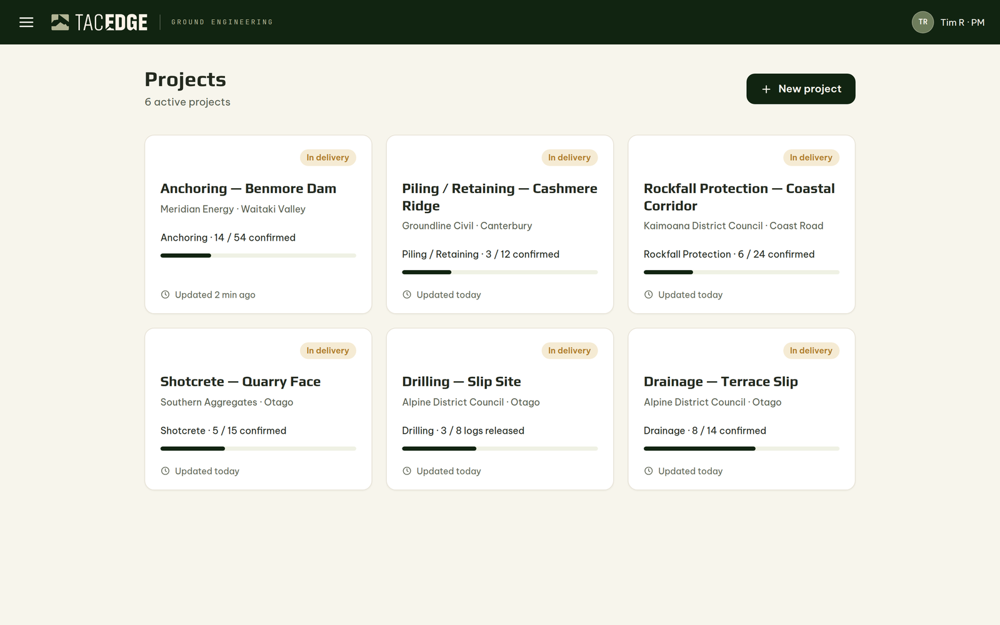
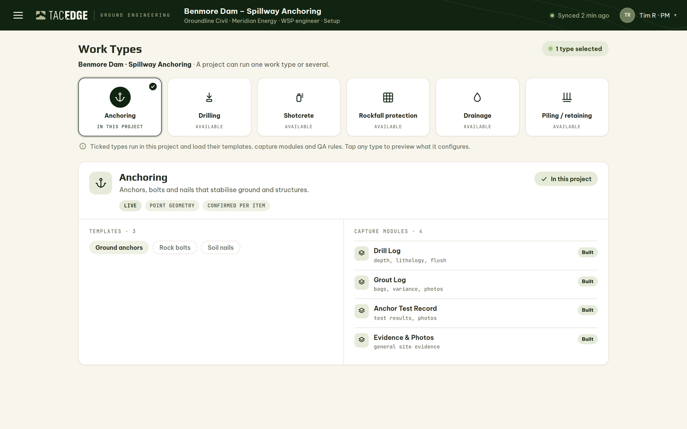
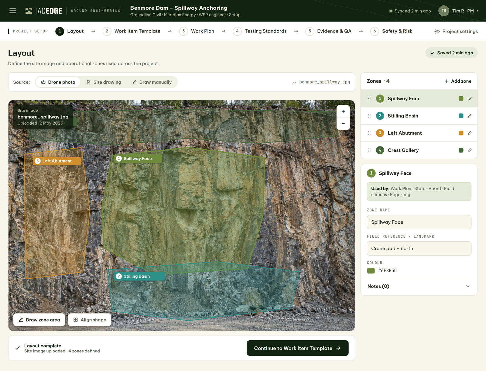
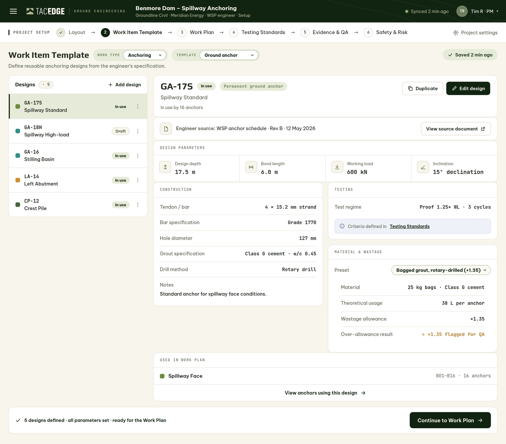
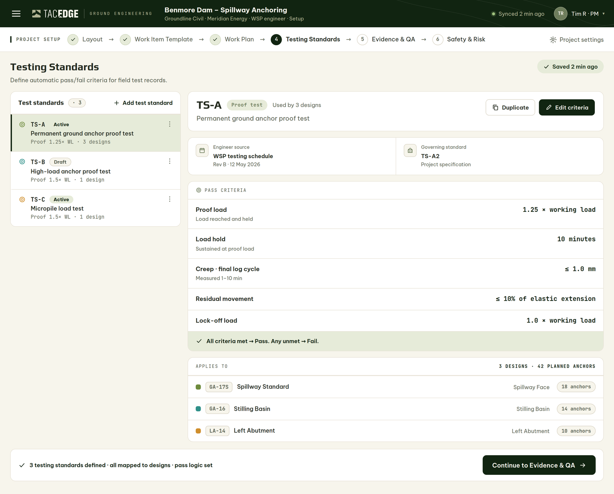
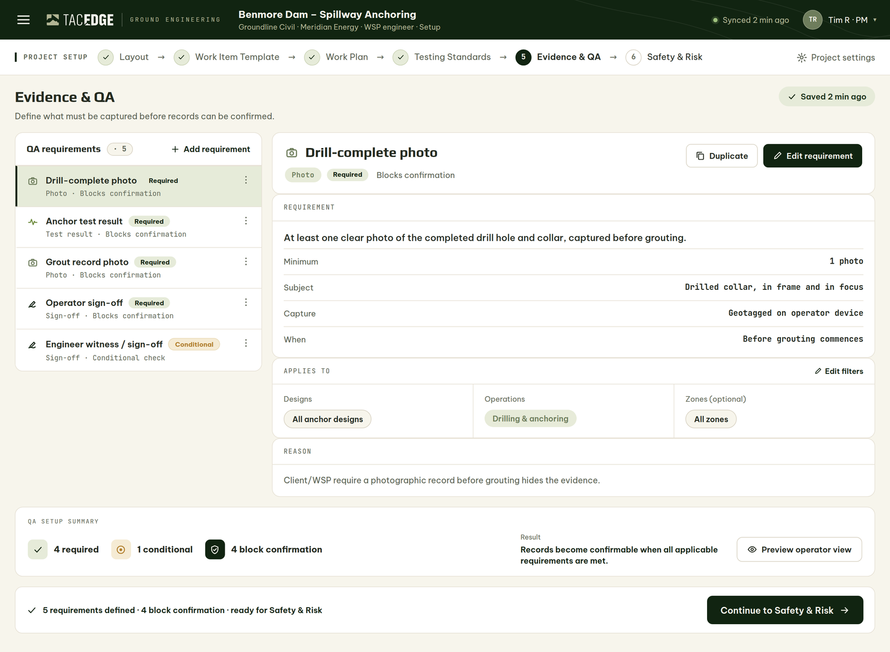
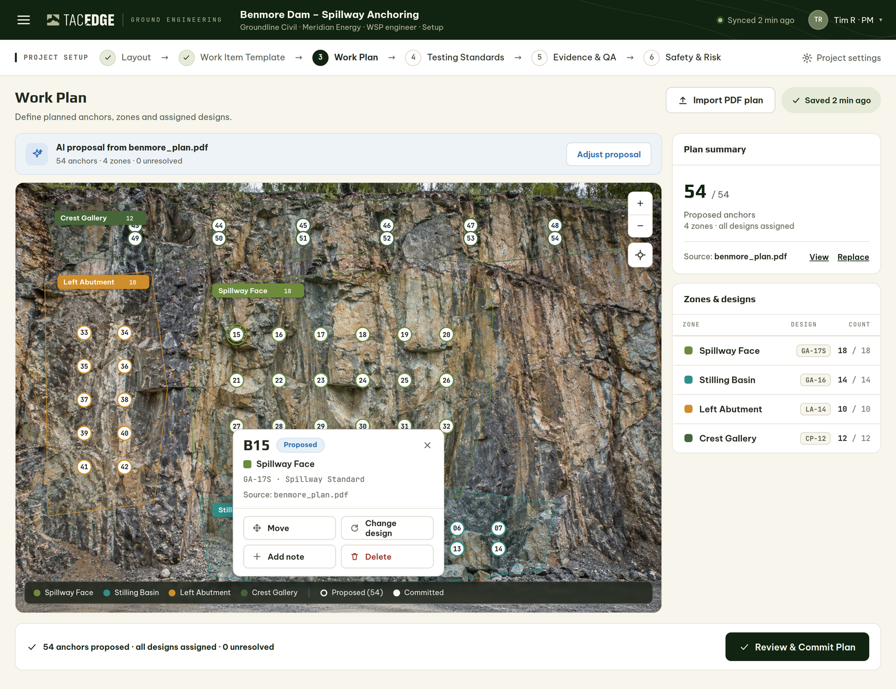
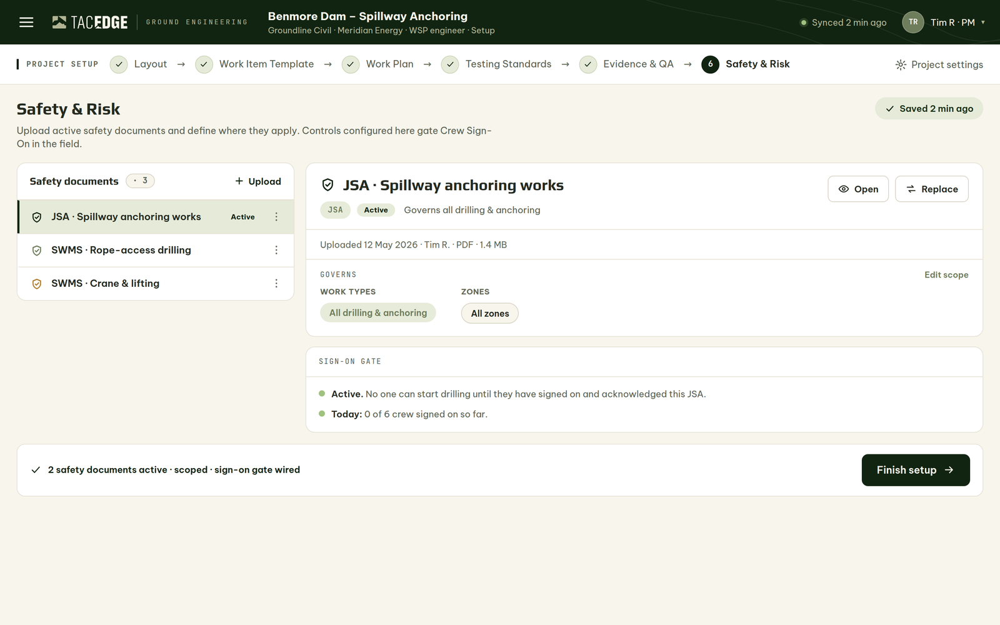
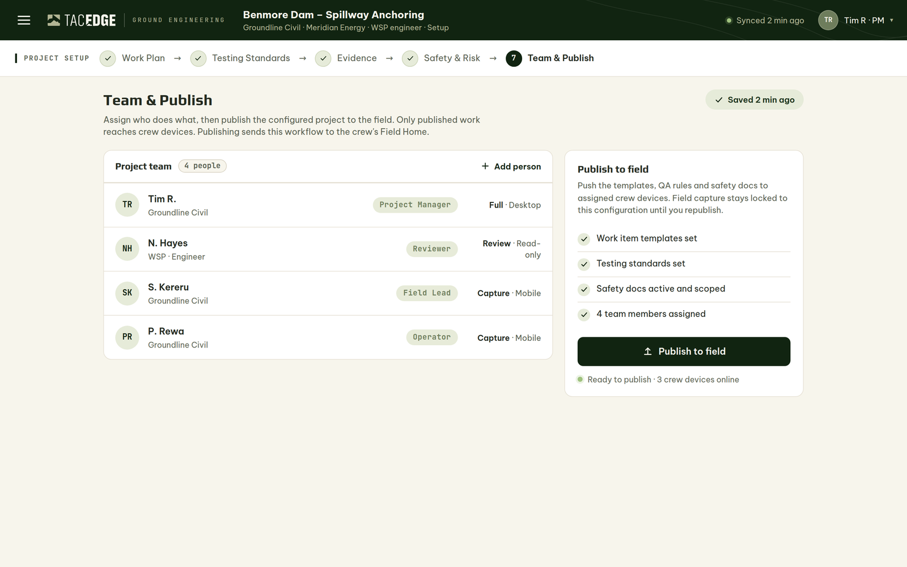
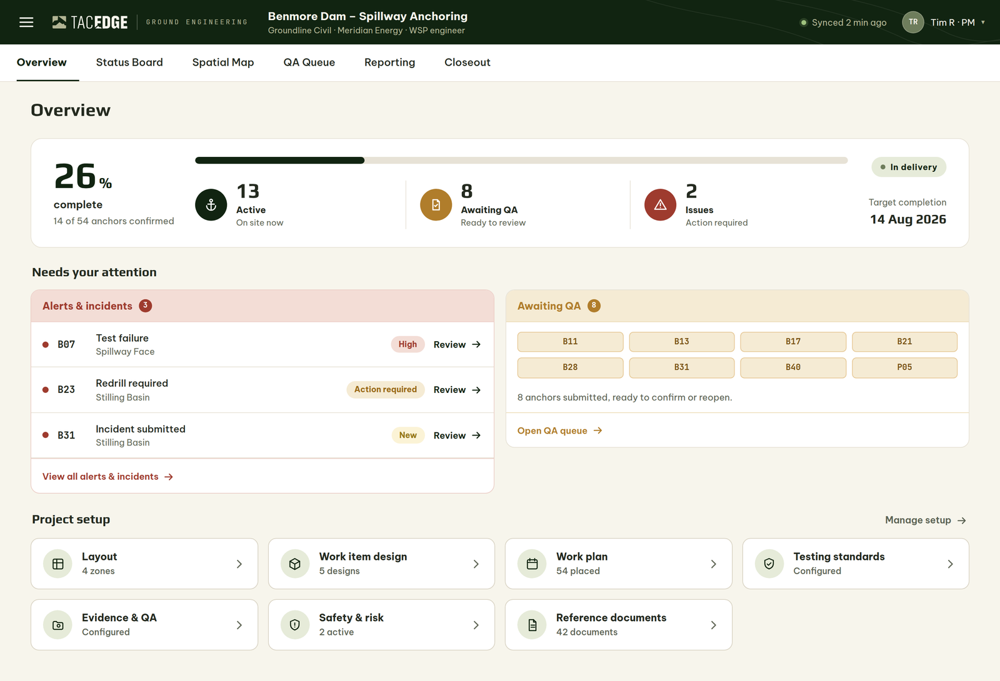
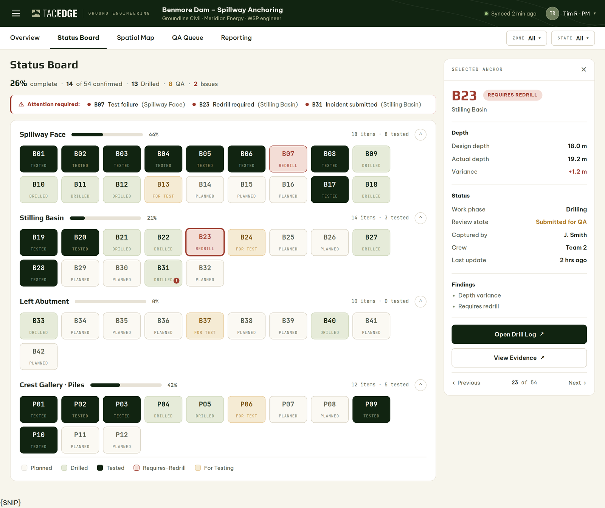
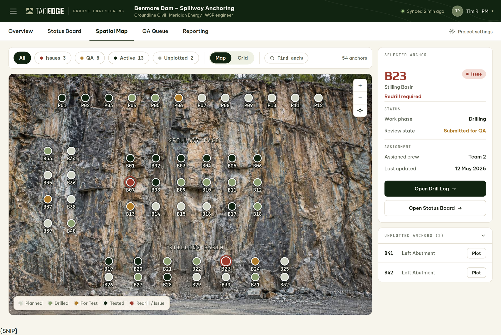
C · Outcome
The workflow produces a preset project the field inherits, a live status picture, and — after QA — confirmed records assembled into reporting and closeout. The PM owns the record during QA and owns the release decision. In the prototype the flow is navigable and visually complete but not runnable end-to-end (no persistence).
D · Scoping relevance
- How is project + work-item identity stored, and how is derived project status computed and refreshed?
- Plan-import (PDF → planned items) data flow with human approval.
- How does “publish to field” commit a configuration the operator inherits offline?
Internal · TACEDGE Ground Engineering V2 · Prototype WalkthroughShared clarity for ground-engineering delivery.